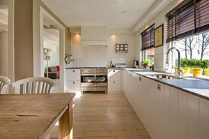

Übung zu den Grundlagen des CSS-Grids.
Bevor Sie sich einen Kuchen backen, sollten Sie folgende Dinge anschaffen, falls Sie sie noch nicht besitzen:
In jedem Falle brauchen Sie eine aufgeräumte und gut geputzte Küche.
Mit einem Handrührgerät wird das Vermischen des Teigs zum Kinderspiel!
Ohne einen modernen Herd mit integriertem Backofen werden Sie nicht weit kommen.
Der fleißige Kuchenbäcker KANN gar nicht genug Backbleche besitzen. Die benutzt man, um den Kuchen im Backofen zu backen (mehr Details zu Herd/Backofen finden Sie weiter oben, wobei man bei diesem Grid-Modell gar nicht immer weiß, ob »weiter oben« nicht vielleicht nur »weiter rechts« oder »weiter links« oder so bedeutet …)
Übrigens ist dieser Text so lange, dass wir mal sehen, was passiert, wenn Boxen sich in der Höhe stark unterscheiden - das war mit der float-Eigenschaft immer unappetitlich, für grid ist das aber kein Problem.